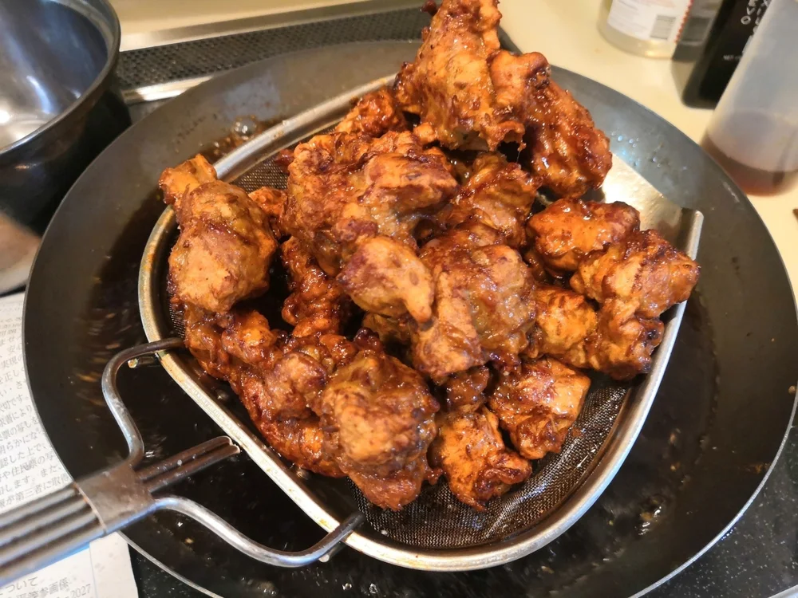
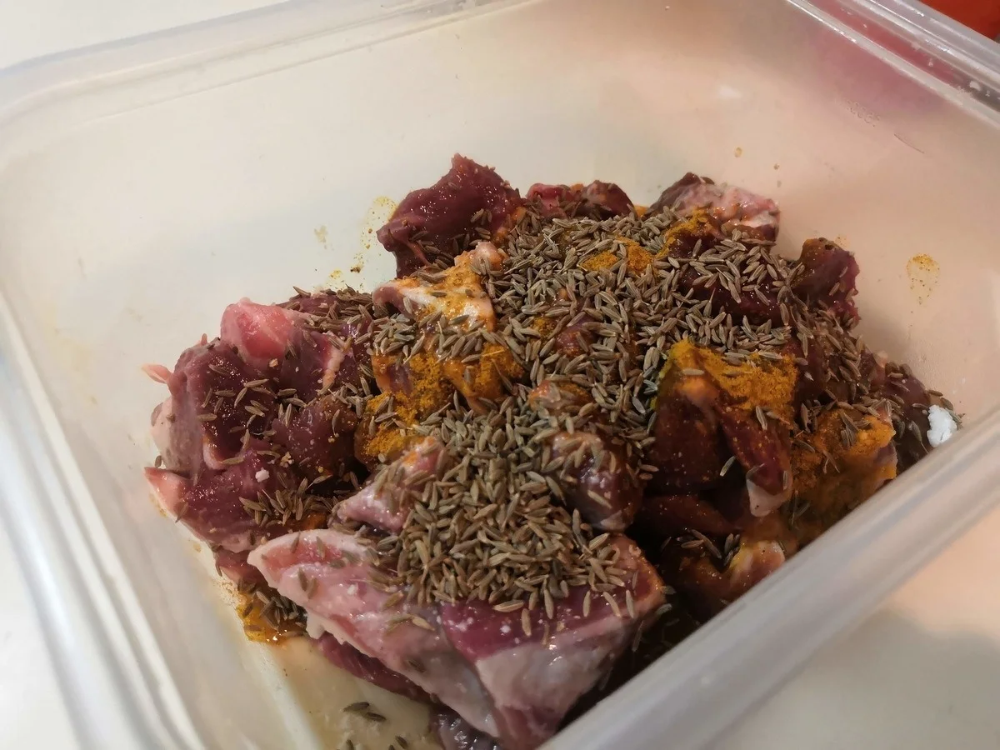

唐揚げ・天ぷら・フライ
おからパウダーの手羽元唐揚げ
おからパウダーを薄めにつけてじっくり揚げ、皮をパリッと仕上げる手羽元の唐揚げです。粉を厚く重ねないので、おからパウダーだけの衣を試してみたい
厚切りのラム肉を液体塩こうじと無糖ヨーグルトに漬け、クミンとカレー粉を合わせた、香りを楽しむ唐揚げです。鶏肉の唐揚げとは違う風味を楽しみたい日にどうぞ。


粉は一度に混ぜず、おからパウダーの次に片栗粉を加えます。外側に片栗粉をまとわせて、カリッとさせるためです。
ヨーグルトも入るので、乾いた粉をまぶしたような衣にはならず、ねっとりと絡む衣になります。
塩こうじを使っているので焦げやすい料理です。厚切り肉の中心まで火が通る前に衣が焦げないよう、170℃を目安に油温を見てください。
揚げ上がりの油切りには、食品用の紙か清潔な網を使います。
加熱時間は作った時の目安です。容器や調理器具によって仕上がりは変わります。中心まで火が通っていることを確認してください。
厚切り生ラム肉のクミン塩こうじ唐揚げの材料・作り方（50kgdiet.com） →
このページは書籍の改訂原稿をもとに掲載しています。元記事は過去の記録のため、材料や表現が異なる場合があります。